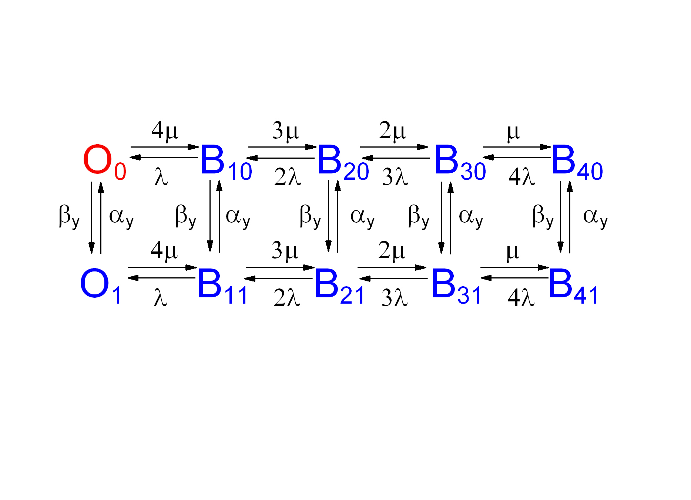
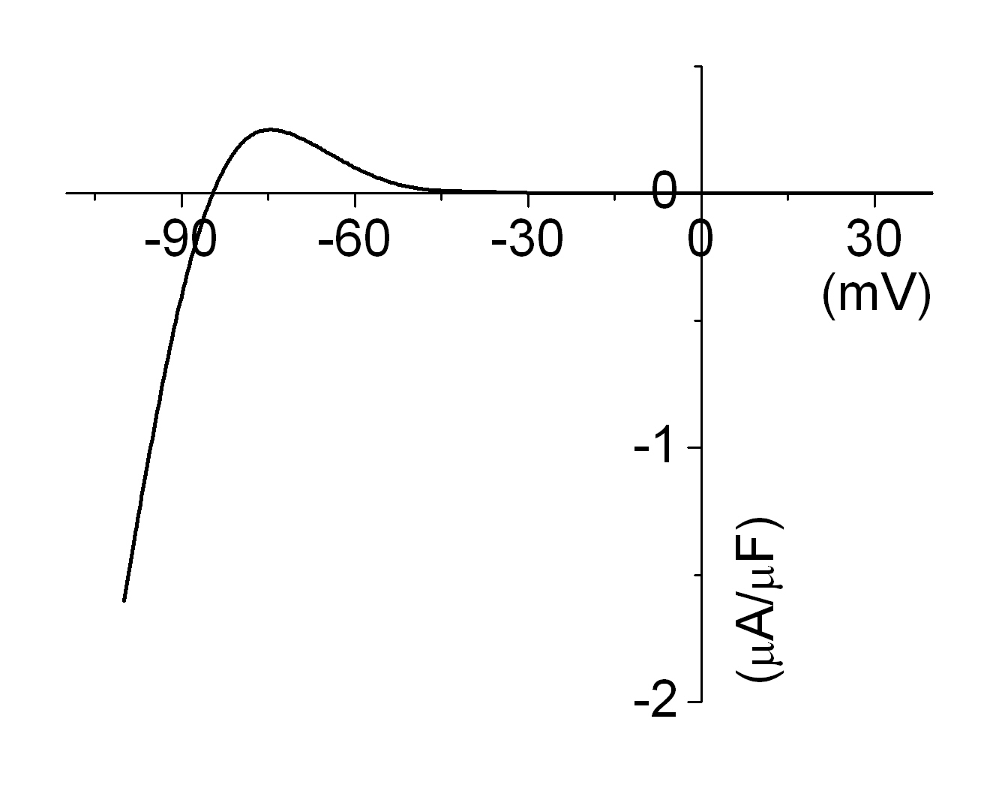
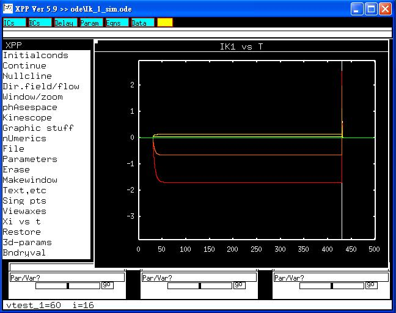

This is a readme file for the models associated with the paper:
Matsuoka S, Sarai N, Kuratomi S, Ono K, Noma A., Role of individual
ionic current systems in ventricular cells hypothesized by a model
study. Jpn J Physiol. 2003 Apr;53(2):105-23.
[Abstract] Individual ion channels or exchangers are described with a
common set of equations for both the sinoatrial node pacemaker and
ventricular cells. New experimental data are included, such as the new
kinetics of the inward rectifier K+ channel, delayed rectifier K+
channel, and sustained inward current. The gating model of Shirokov et
al. (J Gen Physiol 102: 1005-1030, 1993) is used for both the fast
Na+ and L-type Ca2+ channels. When combined with a contraction model
(Negroni and Lascano: J Mol Cell Cardiol 28: 915-929, 1996), the
experimental staircase phenomenon of contraction is reconstructed. The
modulation of the action potential by varying the external Ca2+ and K+
concentrations is well simulated. The conductance of I(CaL) dominates
membrane conductance during the action potential so that an artificial
increase of I(to), I(Kr), I(Ks), or I(KATP) magnifies I(CaL)
amplitude. Repolarizing current is provided sequentially by I(Ks),
I(Kr), and I(K1). Depression of ATP production results in the
shortening of action potential through the activation of I(KATP). The
ratio of Ca2+ released from SR over Ca2+ entering via I(CaL) (Ca2+
gain = approximately 15) in excitation-contraction coupling well
agrees with the experimental data. The model serves as a predictive
tool in generating testable hypotheses.
-------------------------------------------------------------------------------
The state diagram for this Markovian model (model.jpg):

from table 5 (see eqns 4, 5 also) in the paper. Model parameters
are available in the web site:
http://www.jstage.jst.go.jp/article/jjphysiol/53/2/105/_pdf
Parts of the results were shown in figure 9C of the
paper (IVcurve.jpg):

Current-voltage relation of this current can also
be constructed.
-------------------------------------------------------------------------------
To run the models:
XPP: start with the command
xpp Ina_Mar.ode
Mouse click on "Initialconds", and then "(G)o".
Regarding xpp program, please contact with Bard Ermentrout's website:
http://www.pitt.edu/~phase/
Here describes the details in how to get and use xpp.
To run a series of voltage-clamp studies shown in result.jpg, click
"Range over", change to 'vtest_1', and then select voltage protocol
from Steps (16), Start (-100) and End (+60). and press (G)o, This
makes traces: (result.jpg):

The model files were submitted by:
Hsieng-Jung Lai, Jiun-Shian Wu, Sheng-Nan Wu, Ruey J. Sung, Han-Dong
Chang
National Cheng Kung University Medical College
Tainan 70101, Taiwan
e-mail: snwu@mail.ncku.edu.tw